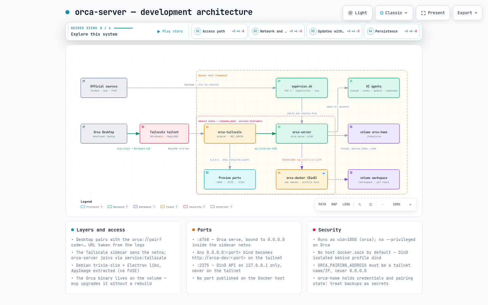

Remote development workstation
Headless Orca Server, mise and AI agent CLIs in a Debian Slim container, reachable only through a Tailscale tailnet — no published host ports, no privileged container, and updates that never need an image rebuild.
Orca (stablyai/orca, MIT) is an
AI orchestrator desktop app: it runs Codex, Claude Code, OpenCode and friends side by side, each agent in its own
git worktree, tracked in one place. Remote use is already supported — orca serve plus the official
headless Linux server guide.
What upstream does not ship is a container — its releases are AppImage, .deb,
.rpm, .dmg and .exe only. This project is that missing piece: a reproducible
Compose stack that runs orca serve headless on a server, keeps the agent CLIs current, and publishes
the whole thing to nothing but a private Tailscale tailnet.
docker pull ghcr.io/chameleonbr/orca-server:latest
The image carries Debian, Electron libs, mise, the scripts and the agent CLIs. The Orca runtime itself is
not baked in — it lands on the orca-home volume at first boot and is upgraded with
mup, so a new Orca release never requires a new image.
The interactive version has light/dark themes, zoom and pan, search, guided views and PNG/SVG export.

| Layer | What runs there | Notes |
|---|---|---|
| Tailscale | orca-tailscale sidecar — WireGuard node, MagicDNS name orca-dev |
Owns the network namespace; holds NET_ADMIN/NET_RAW and /dev/net/tun |
| Orca | orca-server — orca serve :6768 under supervise.sh (PID 1) |
Joins the sidecar with network_mode: service:tailscale; runs as uid 1000 |
| Agents | Claude Code, Codex, Gemini, Cursor Agent, OpenCode (Grok/Hermes/Qwen/Kimi optional) | Installed under ~/.local on the volume — refreshed by mup, never baked into the image |
| Docker | Optional orca-docker DinD sidecar (COMPOSE_PROFILES=dind) |
Separate daemon on 127.0.0.1:2375; the host socket is never mounted by default |
| State | Volumes orca-home and workspace |
Runtime, pairing state and credentials survive restarts and Orca upgrades |
Compose publishes nothing on the host. Everything listening inside the shared namespace is reachable on the tailnet, and nowhere else.
| Port | Bound to | Reachable from |
|---|---|---|
6768 | Orca serve, 0.0.0.0 in the sidecar netns | ws://orca-dev:6768 on the tailnet |
3000, 5173, any port | whatever your project binds to 0.0.0.0 | http://orca-dev:<port> — no Compose edit needed |
2375 | DinD API, 127.0.0.1 only | loopback inside the namespace — never the tailnet |
orca://pair?code=…), then per-agent provider logins stored on the server volume.ports: in the production Compose file; ORCA_PAIRING_ADDRESS must be a tailnet name or IP, never 0.0.0.0.uid 1000, without --privileged and without FUSE; only the optional DinD sidecar is privileged./var/run/docker.sock is mounted only by the legacy docker-access profile, which is root-equivalent on the host..env (with TS_AUTHKEY) is gitignored, and backups of orca-home must be treated as secret material.cp .env.example .env # set TS_AUTHKEY, ORCA_PAIRING_ADDRESS (tailnet name/IP), GIT_USER_NAME, GIT_USER_EMAIL docker compose build docker compose up -d docker compose logs orca 2>&1 | grep 'Pairing URL'
Paste the pairing URL into Orca Desktop under Settings → Remote Orca Servers → Add Server, then authenticate the agent CLIs on the server. Update everything later with one command:
docker compose exec orca mup
To skip the local build, point Compose at the published image:
echo 'ORCA_IMAGE=ghcr.io/chameleonbr/orca-server:latest' >> .env docker compose pull orca docker compose up -d
Clean machine to a paired server: env, Tailscale, first boot, pairing, agent logins, troubleshooting.
Day-2 ops: mup, Orca upgrade and rollback, agent accounts, dynamic ports, validation records.
The full specification and acceptance criteria the stack was built and validated against.
Interactive diagram — layers, ports, security boundaries and the update path, with guided views.